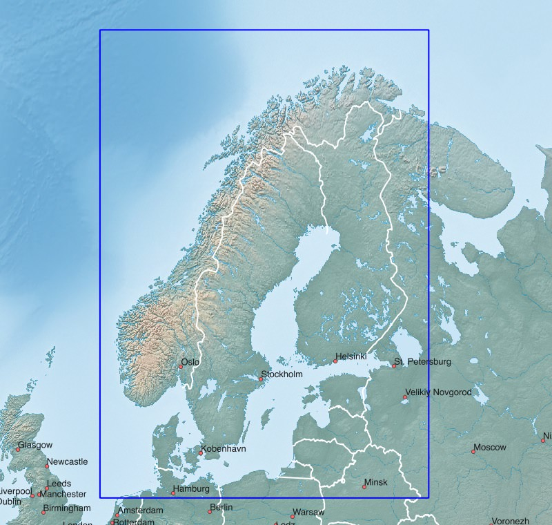
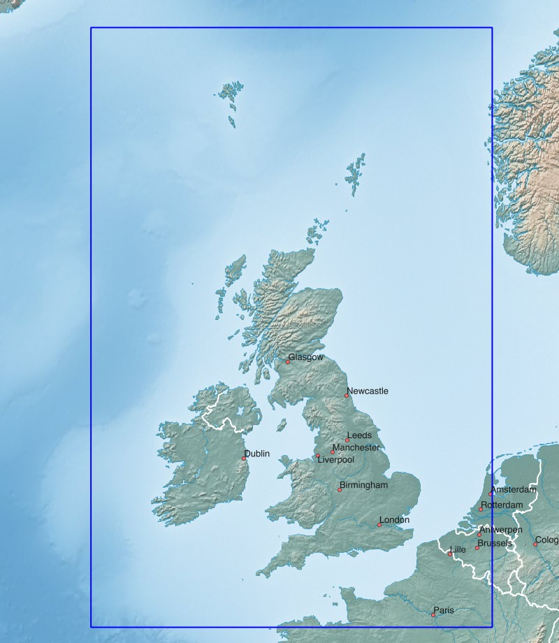
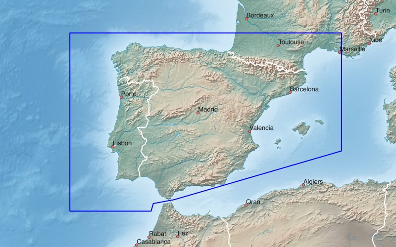
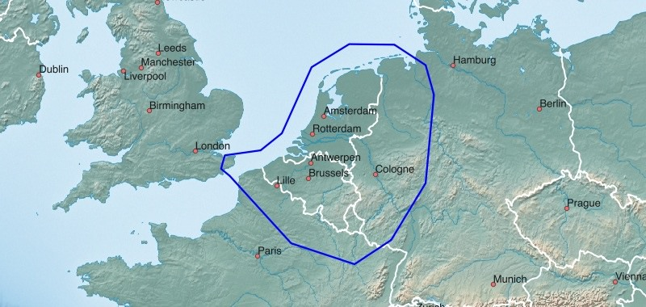
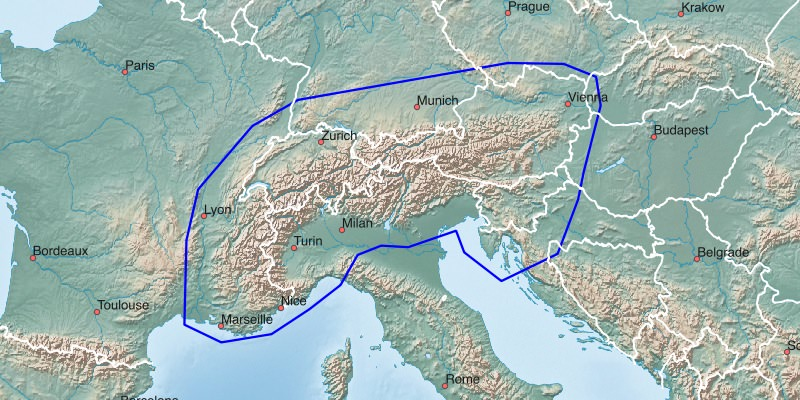
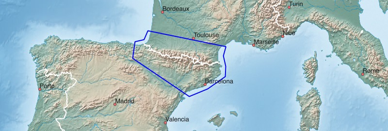
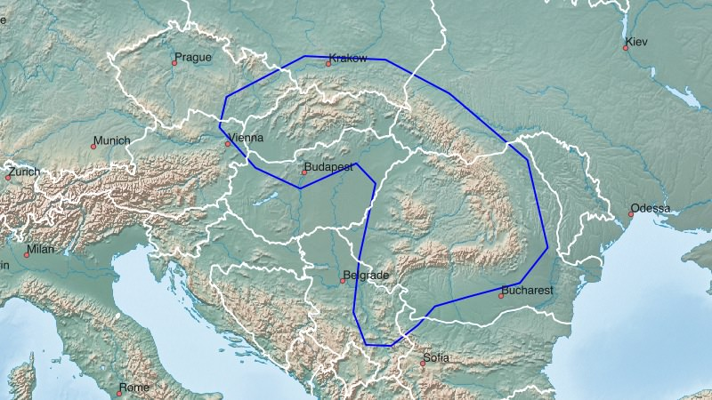
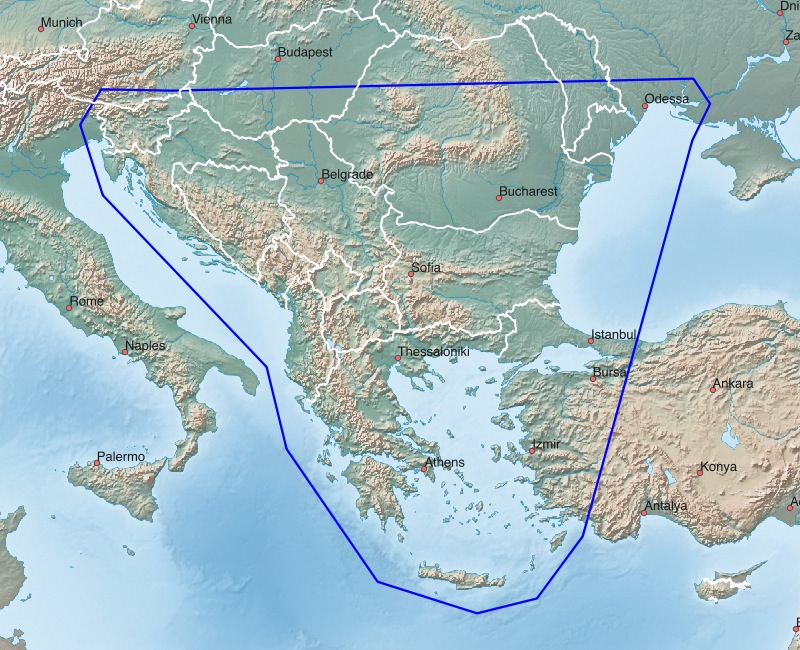

Denmark (DNK), Norway (NOR), Sweden (SWE), Finland (FIN) [Scandinavian states]
Russian Exclave Kaliningrad, Lithuania (LTU), Latvia (LVA), Estonia (EST) [Baltic states]:
Garmin GPS-device: Scandinavian + Baltic States - install image for micro SD card (1.4 GB)
Microsoft Windows: Scandinavian + Baltic States - archive for Garmin BaseCamp (1.4 GB)
Apple Mac OS X: Scandinavian + Baltic States - install archive for Garmin BaseCamp (1.4 GB)
All operating systems: Scandinavian + Baltic States - image folder for QLandkarte (1.4 GB)

United Kingdom (GBR), Ireland (IRL), Faroe Islands (FRO):
Garmin GPS-device: UK + Ireland - install image for micro SD card (1.1 GB)
Microsoft Windows: UK + Ireland - archive for Garmin BaseCamp (1.1 GB)
Apple Mac OS X: UK + Ireland - install archive for Garmin BaseCamp (1.1 GB)
All operating systems: UK + Ireland - image folder for QLandkarte (1.1 GB)

Spain (ESP), Portugal (PRT) [Iberian Peninsula, Pyrenees, Balearics]:
Garmin GPS-device: Spain + Portugal - install image for micro SD card (0.9 GB)
Microsoft Windows: Spain + Portugal - archive for Garmin BaseCamp (0.9 GB)
Apple Mac OS X: Spain + Portugal - install archive for Garmin BaseCamp (0.9 GB)
All operating systems: Spain + Portugal - image folder for QLandkarte (0.9 GB)

Belgium (BEL), Netherlands (NLD), Luxembourg (LUX) [BeNeLux States]:
Garmin GPS-device: BeNeLux States - install image for micro SD card (1.0 GB)
Microsoft Windows: BeNeLux States - archive for Garmin BaseCamp (1.0 GB)
Apple Mac OS X: BeNeLux States - install archive for Garmin BaseCamp (1.0 GB)
All operating systems: BeNeLux States - image folder for QLandkarte (1.0 GB)

Wider Area Alps [Switzerland (CHE), Austria (AUT), Slovenia (SVN)]:
Garmin GPS-device: Wider Area Alps - install image for micro SD card (1.8 GB)
Microsoft Windows: Wider Area Alps - archive for Garmin BaseCamp (1.8 GB)
Apple Mac OS X: Wider Area Alps - install archive for Garmin BaseCamp (1.8 GB)
All operating systems: Wider Area Alps - image folder for QLandkarte (1.8 GB)

Pyrenees:
Garmin GPS-device: Pyrenees - install image for micro SD card (0.2 GB)
Microsoft Windows: Pyrenees - archive for Garmin BaseCamp (0.2 GB)
Apple Mac OS X: Pyrenees - install archive for Garmin BaseCamp (0.2 GB)
All operating systems: Pyrenees - image folder for QLandkarte (0.2 GB)

Carpathians:
Garmin GPS-device: Carpathians - install image for micro SD card (0.5 GB)
Microsoft Windows: Carpathians - archive for Garmin BaseCamp (0.5 GB)
Apple Mac OS X: Carpathians - install archive for Garmin BaseCamp (0.5 GB)
All operating systems: Carpathians - image folder for QLandkarte (0.5 GB)

Balkan:
Garmin GPS-device: Balkan - install image for micro SD card (0.5 GB)
Microsoft Windows: Balkan - archive for Garmin BaseCamp (0.5 GB)
Apple Mac OS X: Balkan - install archive for Garmin BaseCamp (0.5 GB)
All operating systems: Balkan - image folder for QLandkarte (0.5 GB)
We wish you lots of fun with the Freizeitkarte maps ... and many interesting trips.